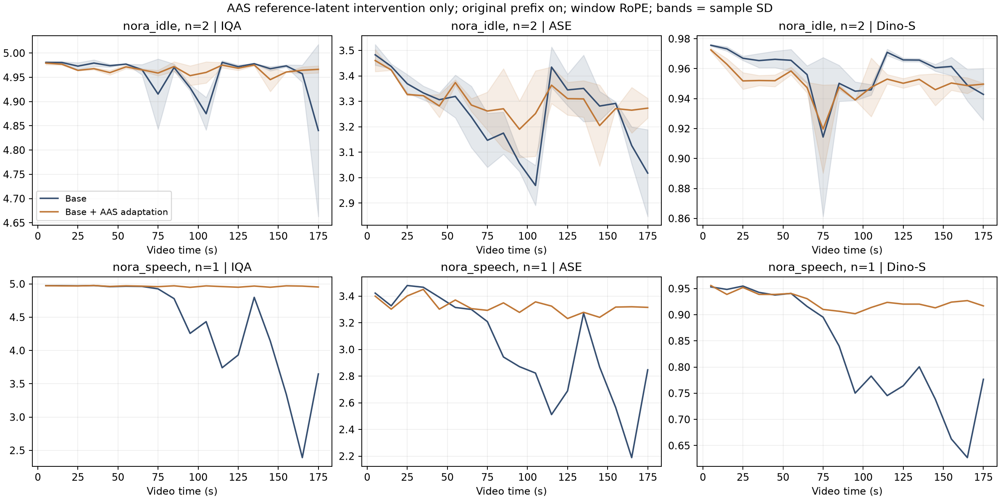
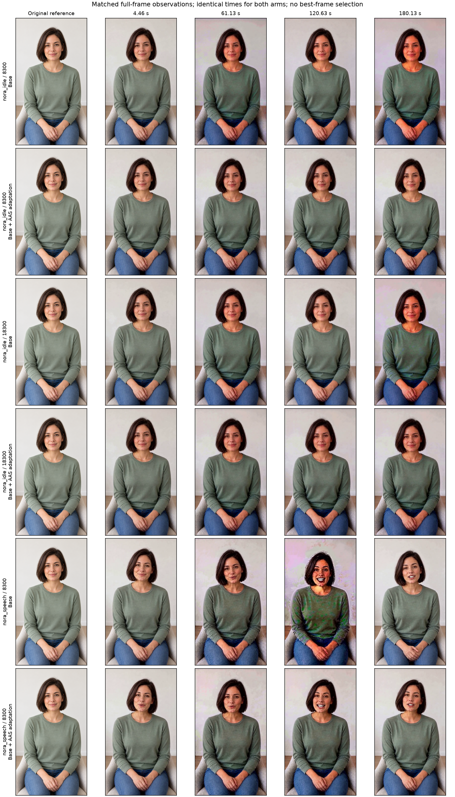

Archived original experiment · 14–15 October 2026. Restored 28 October from retained files; no new model run. Original report language and numerical results preserved. Videos are unchanged. This archive includes the 25 eligible complete screening trajectories and 6 timestep-KV comparison videos; per-segment controls are omitted.
Archive manifest.
Base + AAS：只改变固定参考的来源
从已停止实验的前 1636 段中，提取全部完整 Base／AAS 配对：静坐两个种子、说话一个种子，共 6 条三分钟视频。直接复用已有输出和评分。
这里的 Base 指原始 baseline：固定前缀开启、历史 τ=0.8、window RoPE。此前暂停的 prefix off＋生成锚点实验未启动；两套设置不可混为同一个对照。
控制变量与迁移范围
两组共用开场、每段提示词和随机种子，固定前缀、历史噪声与 RoPE 均相同。AAS 组从第一个续段起，用共同开场的首个生成 latent 替换 DiT 的两个图像参考块，并固定沿用。378 个续段请求的对应条件与锚点哈希已核对。
这实现了论文“使用首个生成 latent 作为固定参考”的思路。H3 保留原始多模态图像／文本嵌入，使用显式图像参考，并非论文的 causal sink KV 实现。Dino-S 始终对原始输入图评分。
现有 window 模式在位置检查的 0、10、100、1000 秒上，参考图至目标起点的时间坐标差均为 122，没有随时长拉大。本轮保持该模式，不加入 Rolling RoPE 变量。
按场景查看实测结果
每条视频先求均值，再在同场景内汇总；± 表示种子之间的样本标准差。说话仅一个种子，尚不能确认重复性。
静坐组：美学分小幅改善，但参考图相似度略降。说话组：这个种子下 AAS 的评分明显更稳，需结合视频确认退化的具体表现。不能把单个说话种子的较大改善直接推广到所有场景。
这是提前停止后对既有实验的专项分析。IQA 接近上限时区分能力有限；Dino-S 受姿态和背景影响；T.Flicker 只比较静坐。没有盲评 MOS。
画质随时间的变化
上面的场景／种子选择同时控制曲线。蓝色为 Base，橙色为 AAS。
分场景均值与标准差图

固定时间点的画面对照

依次为原始参考图和预定片段中间帧；静帧用于定位问题，完整动作与接缝仍需看视频。